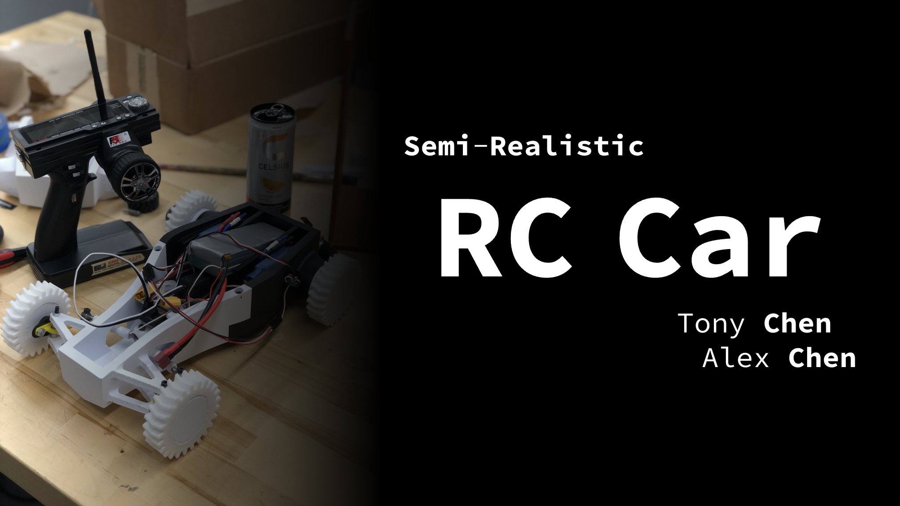
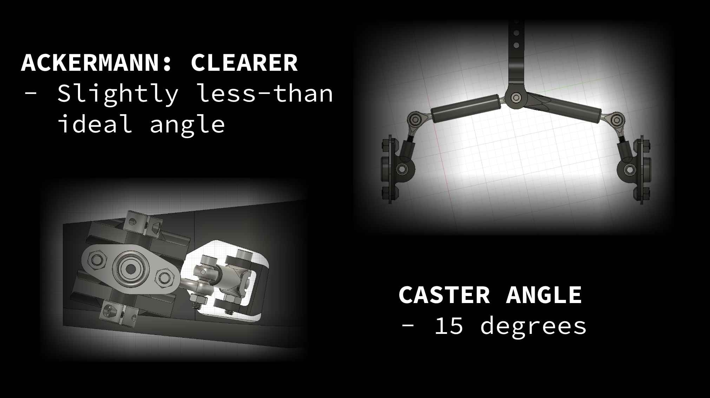
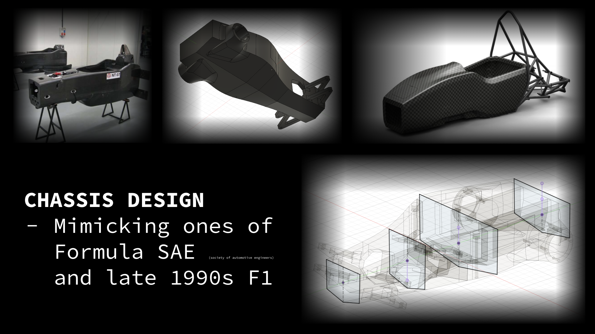
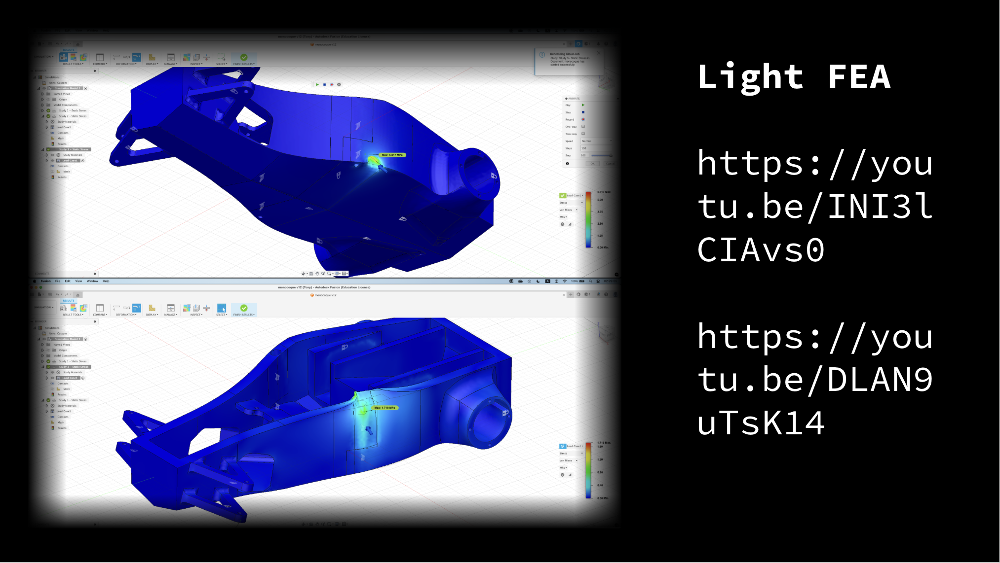

Details about the things I’ve built and written outside the books
YouTube channel · animated proofs
orz67, a channel where I animate proofs with Manim.
Some arguments are much easier to watch than to read. The channel is my attempt at those: a proof gets built on screen, one object at a time, in the order you would actually discover it. Manim makes the animation cheap and the scripting expensive, which turns out to be the right trade, since deciding what to show and in what order is the entire problem.
@orz67 ongoing
Research paper · U.S. history
The Political Faucet.
A paper arguing that the United States treats science funding as a faucet: opened wide in Cold-War panic, shut again in peacetime apathy. The interesting part is the lag. The volatility does not show up immediately; it resurfaces roughly a decade later, in domestic PhD production and in U.S. results at the IMO.
Data project · with Hunter Faderewski
Kennywood and Cedar Point accelerometer studies. Both live.
We rode with accelerometers and turned the raw logs into ride profiles: g-forces, airtime, and the shape of every drop. The fun of it is that a coaster is a physical system you are allowed to instrument by simply getting on it, and the data comes back messy enough to need real signal processing before it says anything.
Each site pairs the quantitative side against the experience of the ride itself, so the plots sit next to the part where we describe what that particular drop felt like.
Build · with Tony Chen, 2025–26
Semi-Realistic RC Car. Designed, printed, wired, and repeatedly rebuilt.
The point was to build an RC car the way a real car gets designed rather than the way a kit goes together: choose the steering geometry deliberately, size the motors from a torque estimate, and let the chassis follow from both. That constraint is what made it hard, and it is also why almost nothing worked the first time.

Steering is a real Ackermann linkage. The inside and outside wheels turn through different angles so that all four wheel circles share a single turn center, which is what stops the tires from scrubbing sideways through a corner. Ours sits slightly under the ideal angle. We also set fifteen degrees of positive caster: the offset between the contact patch and the steering axis gives a moment arm, that moment arm produces self-aligning torque, and the wheels return to center on their own rather than needing to be steered back.

Motors came out of a calculation rather than a catalog. With a wheel radius of 3.5 cm and \( F = ma = 1\,\mathrm{kg}\cdot 5\,\mathrm{m/s^2} \), the requirement is \( \tau = rF \approx 0.18\ \mathrm{N\,m} \), so we bought two 0.199 N·m motors, which works out to roughly 11.4 m/s² on a one-kilogram car. Running one motor per driven wheel also let us delete the axle, the differential, and the prop shafts, which was the largest single weight saving in the design.

The chassis is a monocoque modeled on Formula SAE cars and late-1990s F1, which is where the semi-realistic in the title comes from. We ran light static-stress studies in Fusion on each revision, mostly to find out which corners were carrying load and which were decoration. Peak von Mises stress landed in the single-digit megapascals, a long way from being the limiting factor on a printed one-kilogram car.

The electronics were the part that fought back. We started out trying to drive the ESCs from a Raspberry Pi and lost that argument to GPIO timing, the receiver connection, and the problem of two ESCs at once. What finally worked was much dumber: a Y cable from the single receiver into both ESCs, a second battery to feed them, and the servo on channel one for steering. After that it was wheels falling off, a servo horn that refused to seat, and enough full redesigns that I stopped counting.
Problem series · ongoing
The Cursed Series, an ongoing set of deliberately cursed problems and constructions.
Problems and constructions that look wrong and turn out to be right. I started it to make a specific argument: that the reason mathematics keeps turning out beautiful is not that the objects are tidy, but that the ugly-looking ones are hiding a reason. A construction that offends your intuition and then works is the fastest way I know to show somebody that.
series folder ongoing
Design entry · Biomimicry Youth Design Challenge
A Biomimicry Youth Design Challenge entry.
The challenge asks you to take a mechanism that already works in nature and translate it into an engineered solution. The translation is the hard part: a biological mechanism comes with constraints that do not survive being scaled up or built out of the wrong material, so most of the work is deciding which features are load-bearing.
Teaching · sleight of hand
Card magic, taught for a few years at my local Chinese school.
I taught sleights and self-working tricks to younger students for a few years, which is where I first learned that explaining something to an audience and performing it for them are different skills. A sleight fails the same way a proof does: the moment you rush the step you were least sure about.
The overlap with mathematics is not a stretch either. A lot of card magic is really a theorem you are allowed to perform, which is roughly how I ended up building a Gilbreath principle demo for the interests side of this site.
Blog · Substack
alecks67, a blog.
Where problems, half-finished ideas, and my personal life go to get written down. Some posts are mathematical and some are not; the useful thing about a blog is that a thought does not have to be finished to be worth writing, which is the opposite of everything else on this page.
alecks67.substack.com ongoing